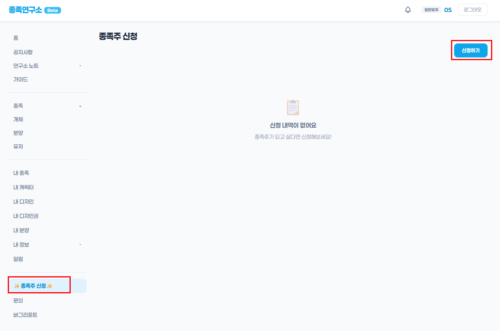
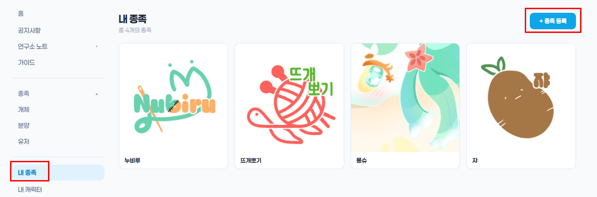
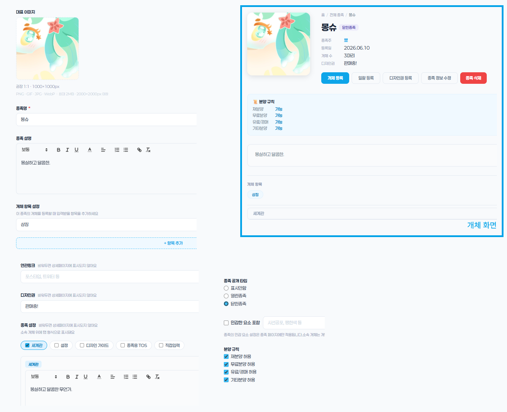
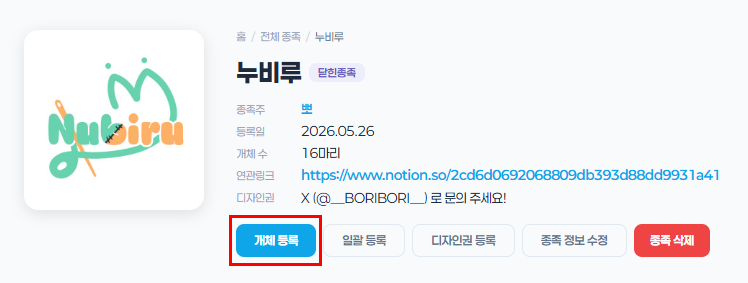
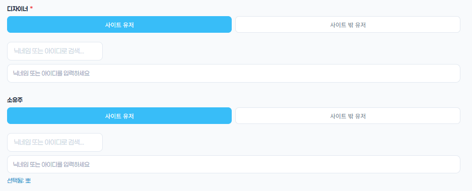
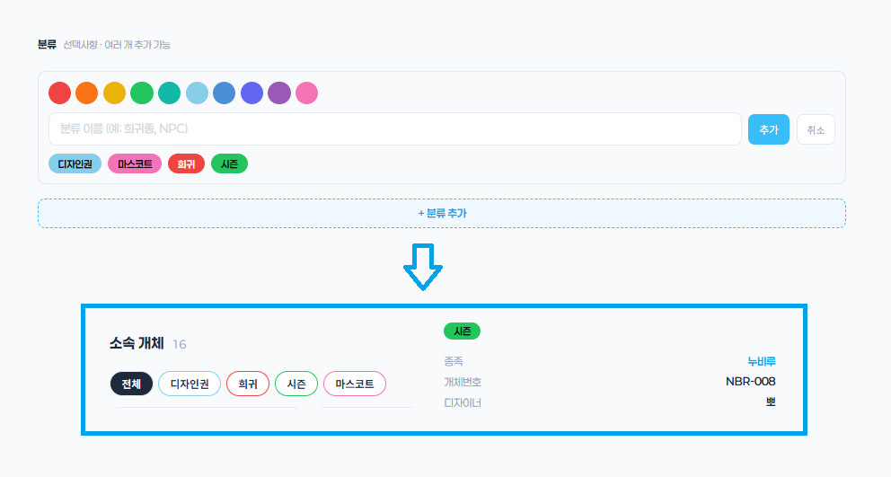
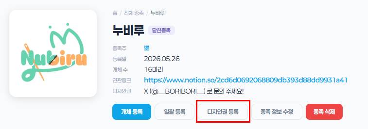
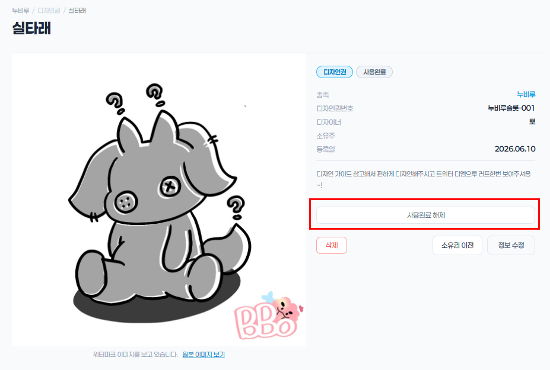
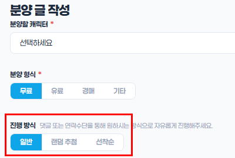
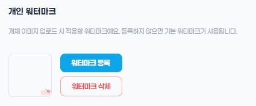

종족연구소는 종족과 개체를 편하게 정리하고 분양할 수 있는 아카이브 사이트 입니다!
종족주는 자신의 종족을 등록하고, 개체를 분양할 수 있으며, 소유자들은 자신의 개체를 이전받아 관리할 수 있습니다.
종족연구소 사용 방법을 안내합니다
종족연구소는 종족과 개체를 편하게 정리하고 분양할 수 있는 아카이브 사이트 입니다!
종족주는 자신의 종족을 등록하고, 개체를 분양할 수 있으며, 소유자들은 자신의 개체를 이전받아 관리할 수 있습니다.
사이드바에서 종족 메뉴를 클릭하면 등록된 모든 종족을 볼 수 있습니다.
종족 카드를 클릭하면 해당 종족의 상세 페이지로 이동하며, 종족 설명·규칙·개체 목록을 확인할 수 있습니다.
사이드바에서 개체 메뉴를 클릭하면 도감에 등록된 모든 개체를 볼 수 있습니다.
개체 카드를 클릭하면 이름·종족·소유자·커스텀 필드 등 상세 정보를 확인할 수 있습니다.
사이드바에서 분양 메뉴를 클릭하면 현재 진행 중인 분양 목록을 볼 수 있습니다.
분양 상세 페이지에서 연락 방법을 확인하고 종족주에게 연락하세요.
자신의 종족을 등록하려면 종족주 신청을 먼저 진행해야 합니다. 사이드바 하단의 종족주 신청 버튼을 클릭하세요.
승인 후 종족 등록 권한이 부여되며, 종족 이름·설명·대표 이미지·설정 등을 설정할 수 있습니다.



개체등록은 내 종족 > 개체 등록 으로 할 수 있습니다.
개체 등록 시 종족주 영역 (이름·개체번호·설명 등)을 설정할 수 있습니다.



자신의 종족의 디자인권(MYO)을 등록하고 유저에게 이전할 수 있습니다.
만약 디자인권을 받은 상대가 사용버튼을 눌렀다면, 종족주는 해당 신청을 승인하거나 거절할 수 있으며 이후에도 상태를 변경할 수 있습니다.


분양은 자신이 소유한 개체 중 분양이 가능한 개체라면 직접 등록할 수 있습니다.
분양은 자신이 소유한 개체 중 분양은 무료·유료·경매·기타 네 가지 형식이 가능합니다.

종족연구소에 등록되는 개체는 기본적으로 연구소 기본 워터마크가 적용됩니다.
프로필 설정에서 개인 워터마크를 설정할 수 있습니다!

사이드바 하단의 문의 또는 버그리포트 버튼을 클릭해 제보할 수 있습니다.
로그인 후 내용을 작성하면 관리자에게 전달됩니다. 답변은 사이트 내 알림으로 안내드립니다.
종족·개체·분양 목록 조회는 비로그인 상태에서도 가능합니다. 분양 신청, 개체 등록, 문의 등의 기능은 로그인이 필요합니다.
로그인한 모든 회원이 신청할 수 있습니다. 관리자 검토 후 승인 여부가 결정됩니다.
개체 상세 페이지에서 개체 이전 기능을 통해 소유자를 변경할 수 있습니다. 이전 내역은 기록으로 남습니다.
종족 또는 개체 상세 페이지에서 수정 버튼을 클릭하면 수정할 수 있습니다. 권한이 없는 경우 관리자에게 문의하세요.